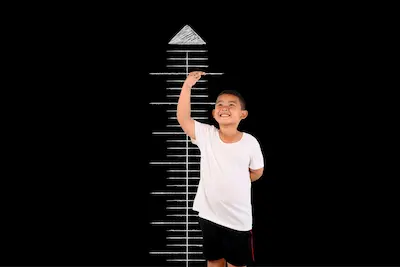

IMC en niños vs. adultos: ¿Cómo interpretarlo?
Diferencias fundamentales en el cálculo e interpretación
El IMC en niños y adolescentes requiere un enfoque completamente diferente al de los adultos debido a los cambios constantes en la composición corporal durante el crecimiento. A diferencia de los adultos, donde se utilizan valores fijos para clasificar el estado nutricional, en pediatría el IMC se interpreta mediante percentiles que comparan al niño con una población de referencia de su misma edad y sexo. Estos percentiles se derivan de estudios longitudinales masivos como los realizados por los Centros para el Control y la Prevención de Enfermedades (CDC), que han seguido el crecimiento de miles de niños durante décadas para establecer patrones de desarrollo saludable. El rango considerado normal varía significativamente con la edad: por ejemplo, un percentil 60 para un niño de 5 años puede ser completamente saludable, mientras que el mismo percentil en un adolescente de 15 años podría indicar riesgo de sobrepeso. Esta variabilidad refleja los cambios naturales en la composición corporal que ocurren durante el desarrollo, incluyendo los estirones de crecimiento y los cambios en la distribución de la grasa corporal.
El cálculo del IMC pediátrico también tiene particularidades técnicas importantes. Se recomienda medir la altura con precisión milimétrica usando un estadiómetro profesional, ya que pequeños errores pueden afectar significativamente el resultado en niños pequeños. El peso debe tomarse preferiblemente por la mañana, con ropa mínima y después de vaciar la vejiga. Los percentiles se interpretan de manera diferente según la edad: entre 2-5 años, un percentil ≥85 indica riesgo de sobrepeso y ≥95 obesidad; mientras que en mayores de 5 años, estos umbrales cambian a ≥85 para sobrepeso y ≥95 para obesidad, según las directrices de la Academia Americana de Pediatría. Es crucial entender que estos valores no son diagnósticos por sí mismos, sino señales para una evaluación más profunda que incluya análisis de composición corporal, patrones de crecimiento longitudinal y evaluación de hábitos alimentarios y de actividad física.
Factores críticos en la evaluación pediátrica
La interpretación del IMC en niños debe considerar múltiples factores adicionales que no aplican en adultos. La velocidad de crecimiento es un parámetro esencial - un niño que cae del percentil 75 al 25 en un año requiere atención inmediata, incluso si su IMC actual parece "normal". Los antecedentes familiares también juegan un papel crucial; un niño con padres obesos tiene un riesgo 3-4 veces mayor de desarrollar obesidad, independientemente de su IMC actual. Los pediatras utilizan herramientas especializadas como las curvas de crecimiento de la OMS (para menores de 2 años) y las tablas de CDC (para 2-19 años), que incluyen ajustes por maduración sexual y etnia. Los estudios más recientes destacan la importancia de monitorizar no solo el IMC, sino también la circunferencia de cintura (que en niños no debe exceder la mitad de la estatura) y los pliegues cutáneos (especialmente el tricipital y subescapular), que pueden revelar acumulaciones peligrosas de grasa incluso en niños con IMC aparentemente normal.
Cómo calcular y entender los percentiles
Para calcular el IMC infantil, se usa la misma fórmula (peso/altura²), pero el resultado se ubica en tablas de crecimiento estandarizadas, como las de la OMS. Estas gráficas tienen curvas que muestran rangos saludables según la edad. Los padres deben revisarlas periódicamente con el pediatra para detectar tendencias preocupantes, como un aumento rápido de percentiles.
Un niño que pasa del 50° al 90° percentil en un año podría estar desarrollando sobrepeso, incluso si su peso parece "normal" para su altura. La consistencia en las mediciones es clave, ya que fluctuaciones bruscas pueden señalar problemas de alimentación o sedentarismo.
Señales de alerta y cuándo actuar
Además del percentil, hay señales físicas y conductuales que requieren atención. Un niño con IMC elevado y acumulación de grasa en el abdomen, dificultad para hacer ejercicio o patrones de sueño irregular (como ronquidos) podría tener riesgos metabólicos. En estos casos, se recomienda evaluar hábitos alimenticios y actividad física antes de que el problema empeore.
Por otro lado, un IMC bajo (percentil <5) acompañado de fatiga o retraso en el desarrollo puede indicar desnutrición o trastornos endocrinos. Los padres deben consultar a un especialista si observan estos síntomas, ya que la intervención temprana es crucial.
Consejos para un crecimiento saludable
Fomentar una dieta balanceada y actividad física es esencial, pero sin obsesionarse con el peso. En lugar de prohibir alimentos, es mejor enseñar a los niños a elegir opciones nutritivas y disfrutar de movimiento natural, como juegos al aire libre. Limitar el tiempo frente a pantallas y promover comidas en familia también ayuda a establecer hábitos duraderos.
Para niños con percentiles altos, el enfoque debe ser mejorar la salud, no solo bajar de peso. Pequeños cambios, como sustituir bebidas azucaradas por agua o caminar juntos, tienen un impacto significativo sin generar ansiedad. La comunicación abierta y el apoyo emocional son igual de importantes que los números en la báscula.